Team Profile
Adrian
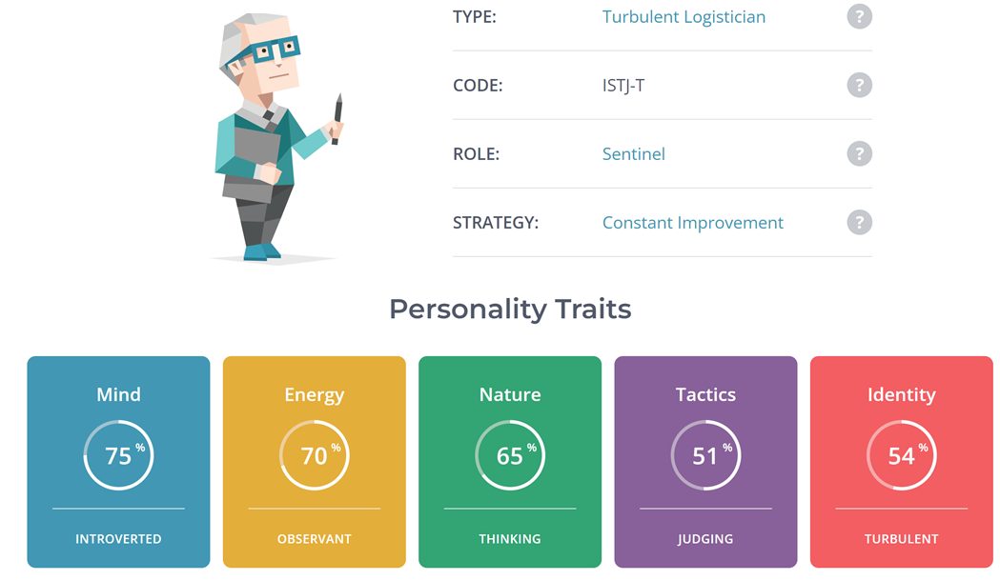 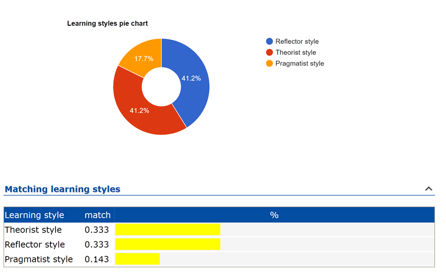 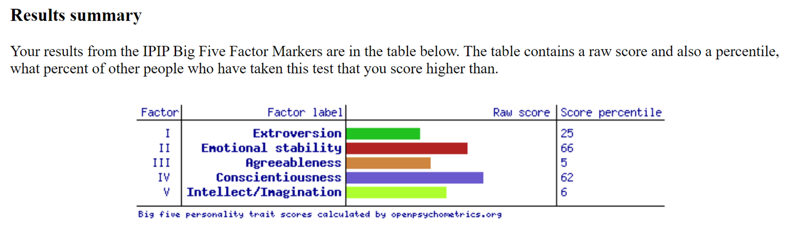Heath
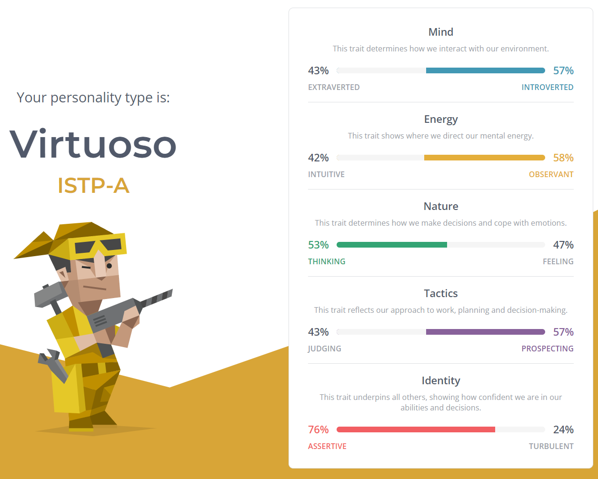 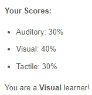 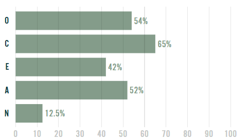Lachlan
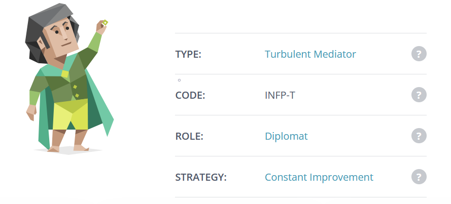 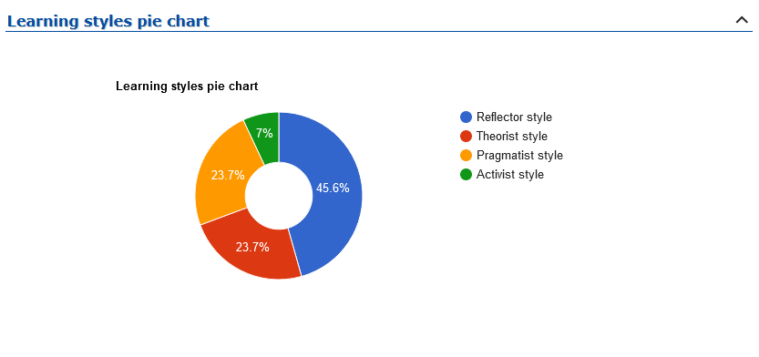 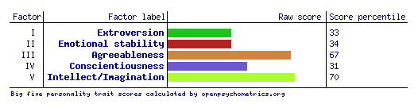Shiou-Ping
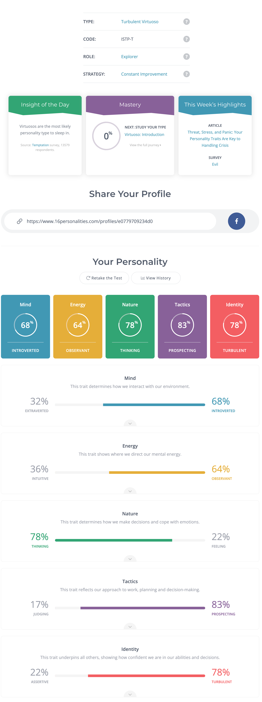 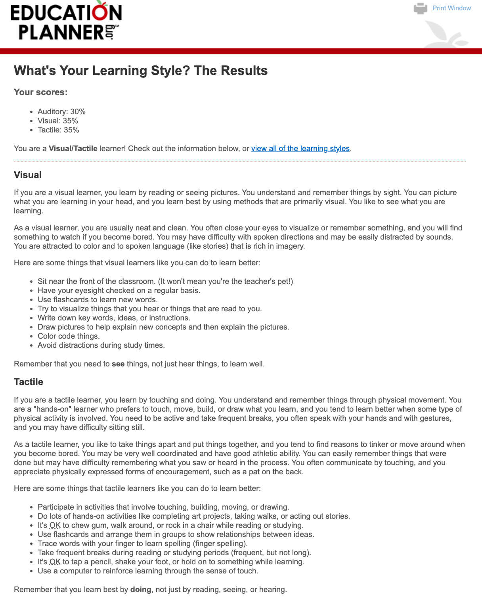 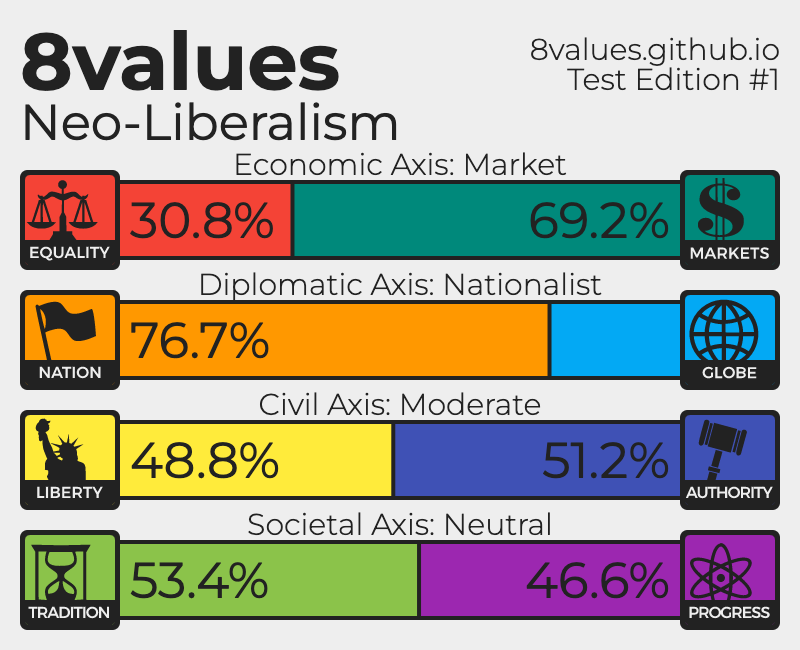Henry
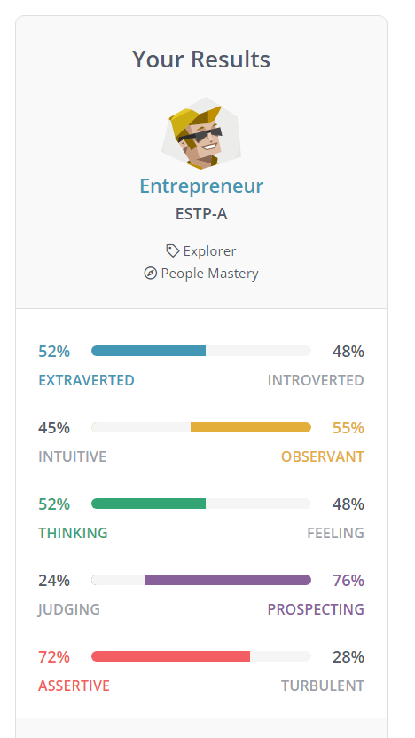 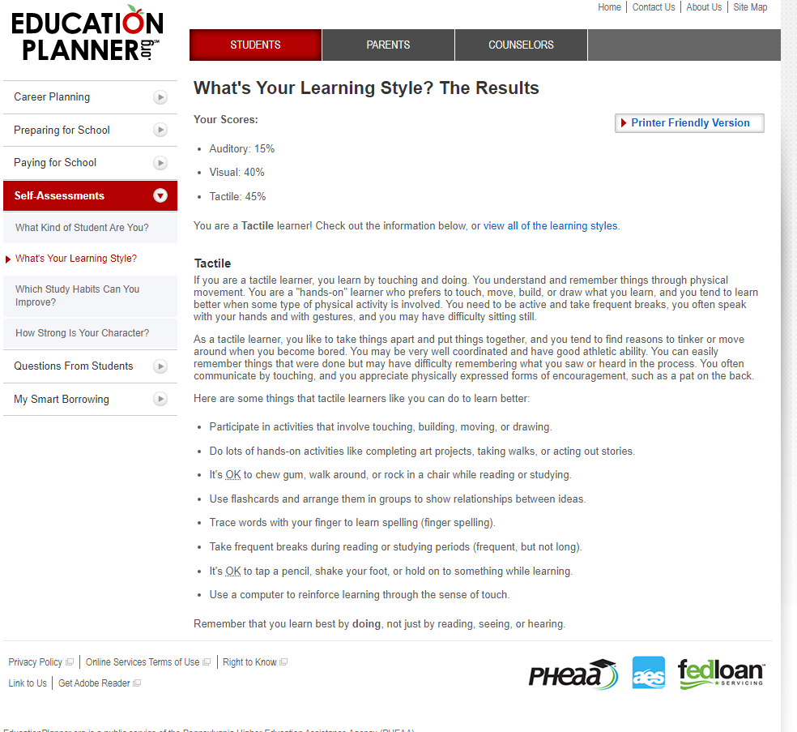 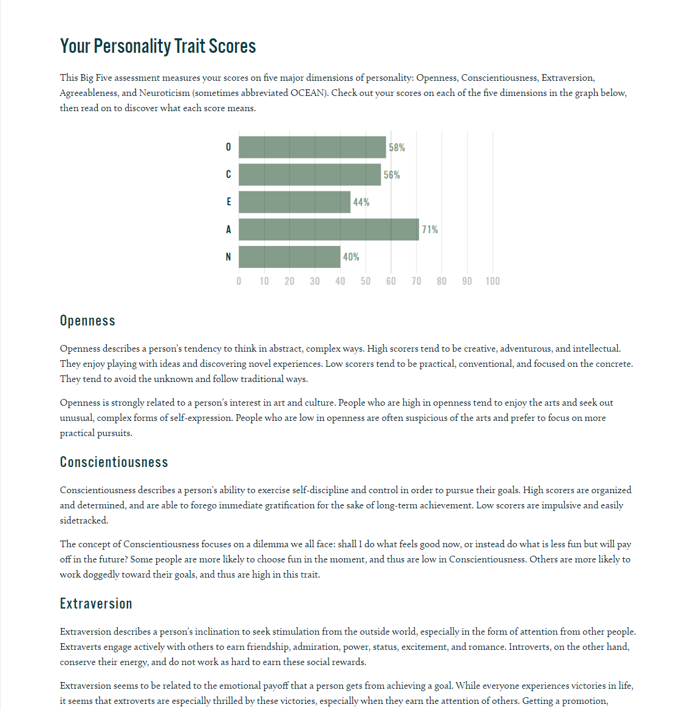Ryan
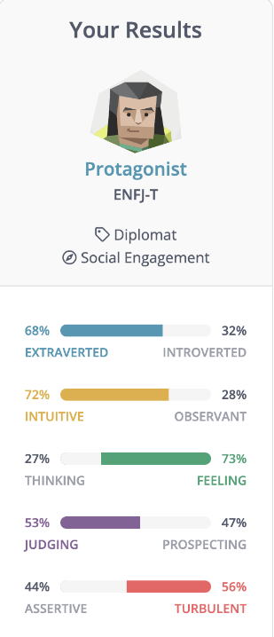 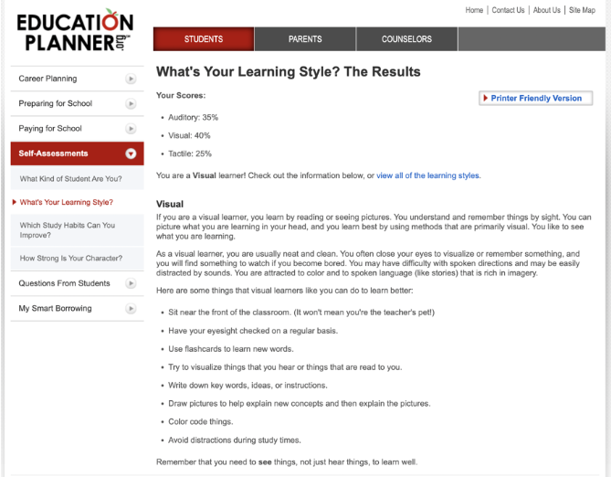Impact
This information has a couple of ways to be useful for our group. Firstly, the similarities between our learning styles, namely having several visual learners, some tactile learners and a couple of reflectors, means that we will be able to work together assist each other in ways that complement our individual learning styles. Secondly, the Myers-Briggs results give us an indication of how each group member will behave in a team and what role they will fill. As we have a range of results, with no member having the same type as another, we should cover a wide range of roles within a team and be able to fill any gaps that may arise. The third test is a little harder to estimate its impact, as there were a couple of different tests done amongst the group, and they tended to be more related to personality traits and behaviour. These could give another indicator as to how we will each fulfil our roles within the group, but not as clearly as the Myers-Briggs test does.